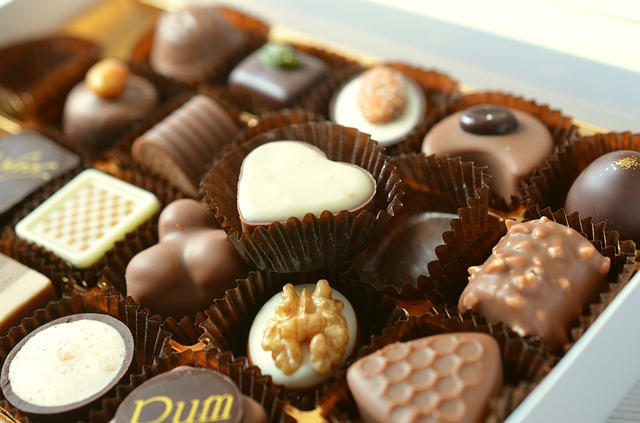

Čokoláda
Historie a současnost
Co možná nevíte
Švýcarsko, kolébka mléčné čokolády
Za vynálezce mléčné čokolády jsou považováni Henri Nestlé (1814 – 1890) a Daniel Peter. Henri Nestlé, švýcarský chemik, sice nevyráběl čokoládu, ale v roce 1867 přišel na způsob, jak vyrobit sušené mléko, které se po smíchání s vodou stane výživou pro kojence.
A právě sušené mléko se jen o pár let později stalo významným zlomem ve vývoji čokolády. Jeho firma byla původně zaměřená jen na výrobu dětské výživy, ale později splynula s firmami známých výrobců čokolády Petera, Kohlera a Caillera a postupně se stala největší světovou potravinářskou společností.

Hořká čokoláda může pomáhat i při dietě
Dánští odborníci na výživu totiž zjistili, že kvalitní extra hořká čokoláda s vysokým podílem kakaa může pomoci s hubnutím. I malý kousek této na cukry velmi chudé pochoutky totiž rychle zasytí a navíc prý zažene nutkavé chutě na sladké a tučné pokrmy.
Podmínkou je dopřát si však skutečně pouze kousek denně, a to navíc extra hořké a kvalitní čokolády s minimálním podílem kakaa 70 %.
Serotonin – hormon „štěstí“
Čokoláda je výborným lékem na stres, depresi, zahání nudu, rozjasní vám pohled. Je opravdu skvělým lékem. Jenže jako každý jiný lék, má i čokoláda své nežádoucí účinky. Čokoláda vás učiní šťastnými.

To má na svědomí kakaové máslo, které má vysoký obsah tryptofánu, který podporuje tvorbu serotoninu – hormonu štěstí. Právě nízká hladina serotoninu způsobuje výkyvy nálad a špatnou psychiku. Pokud vás tedy přepadá nezvladatelná chuť na čokoládu, může za to právě serotonin.
© 2022 | Čokoláda